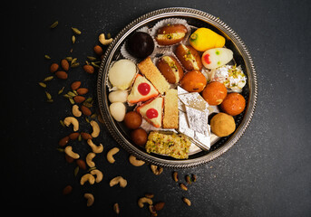

Welcome to Our Sweets Shop
Any social gathering or festival or birthday and weddings are incomplete without sweets.
On Indian festivals like Holi, Diwali, Eid or Raksha Bandan - sweets are prepared
at home or purchased, then shared with family and friends. To mention a few, Kaja, Putarekulu,
Kova Kajikai, Laddu & Ariselu are some of the sweets which are famous in vijayawada.
These sweets are available in any sweet shop in Vijayawada.
